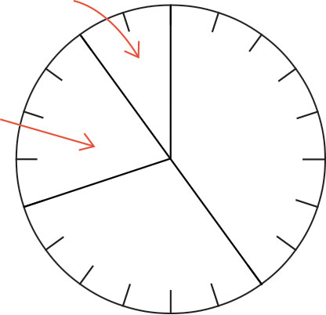
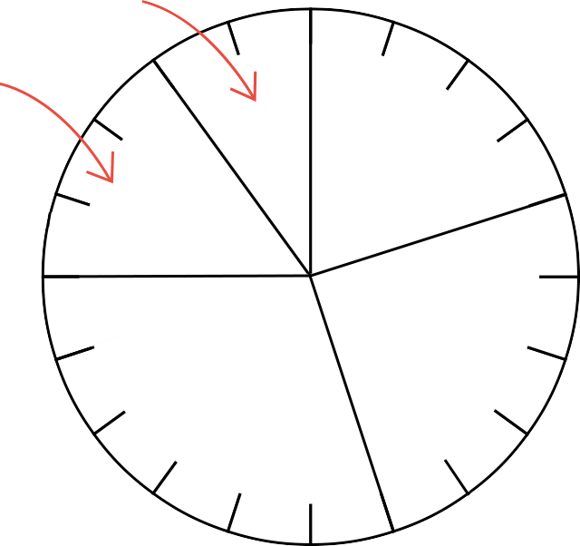

- 문제 1
- 문제 2
- 문제 3
- 문제 4
- 문제 5
-
은경이네 반 학생들이 생일에 받고 싶은 선물을 조사하여 나타낸 그래프입니다. 아래와 같이 전체에 대한 각 부분의 비율을 원 모양으로 나타낸 그래프를 무엇이라고 합니까?
받고 싶은 선물0255075스마트폰
(40 %)가방
(30 %)운동화
(20 %)지갑(10 %)원그래프 -
은경이네 반 학생들이 생일에 받고 싶은 선물을 조사하여 나타낸 그래프입니다. 생일 선물로 스마트폰을 받고 싶은 학생은 전체의 몇 %입니까?
받고 싶은 선물0255075스마트폰
(40 %)가방
(30 %)운동화
(20 %)지갑(10 %)%40 -
성진이네 학교 6학년 학생들이 좋아하는 간식을 조사하여 나타낸 원그래프입니다. 가장 많은 학생이 좋아하는 간식은 무엇입니까?
0255075과자
(20 %)과일
(25 %)떡볶이
(30 %)라면
(15 %)기타
(10 %)떡볶이 -
성진이네 학교 6학년 학생들이 좋아하는 간식을 조사하여 나타낸 원그래프입니다. 과자와 라면을 좋아하는 학생 수는 전체의 몇 %입니까?
0255075과자
(20 %)과일
(25 %)떡볶이
(30 %)라면
(15 %)기타
(10 %)%35 -
성진이네 학교 6학년 학생들이 좋아하는 간식을 조사하여 나타낸 원그래프입니다. 원그래프를 보고 알 수 있는 사실을 말해 보시오.
0255075과자
(20 %)과일
(25 %)떡볶이
(30 %)라면
(15 %)기타
(10 %)예라면을 좋아하는 학생 수는 떡볶이를 좋아하는 학생 수의 절반입니다.